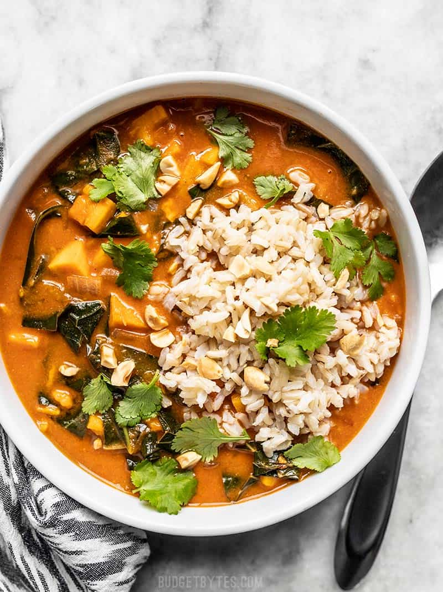

PEANUT STEW

Peanut stew is another very fine delicacy that you will meet when you visit kampala,
this is made up a finely ginded blend of peanuts and many more ingredients as in the recipe below.
ingredients
- grounded peanut
- onions
- mixed spices
- clean water
- carrots
- mushrooms
procedure
- Mix the grinded paenut in little cold water, stire until is makes porridege like substance
- Then cut the greenpaper, onions, tomatoes and garlic on a chopping board and put them separate
- put all the cut ingredinets in water together withthe salt,
let it boil for atleat 2 minutes and the add the clod water peanut porridege that was made in step 1
- Maintain a gentle heat on the pan and let it cook until an iol like substanceis oberserved on the top of the stew, slef made.
- The stew is then ready to be served